|
|
|
|
|Instituto Tecnológico de Costa Rica|Escuela de Matemática| M. Sc. Geovanni Figueroa M. |
|
|
Ecuaciones diferenciales homogéneasExisten algunas ecuaciones diferenciales que al hacer un cambio de variable adecuado se reducen a ecuaciones en variables separadas, como el ejemplo anterior. Antes de estudiar las ecuaciones diferenciales homogéneas es necesario definir lo que es una función homogénea.
Ejemplo
Ahora definimos lo que es una ecuación diferencial homogénea.
Observación: si la ecuación diferencial está escrita en la forma
sería homogénea sí y sólo sí los coeficientes
Demostración: Al hacer la sustitución obtenemos
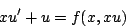
Pero como
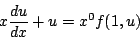
de donde
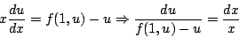
la cual es separable, como se quería.
Ejemplo
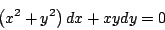
La ecuación diferencial es homogénea pues 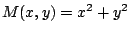 y 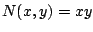 son homogéneas de grado dos
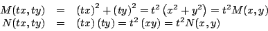
Haciendo la sustitución
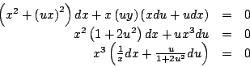
de donde
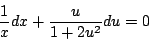
Integrando y volviendo a las variables
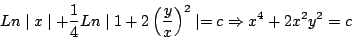
Note que
Observación: Cuando la ecuación diferencial homogénea está escrita en la forma
conviene más rescribirla en la forma
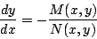
y aplicar quí el cambio de variable Ejemplo
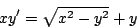
Factorizando
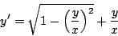
Haciendo la sustitución
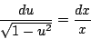
Integrando
Y despejando
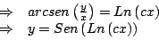
Observación: al dividir por el factor
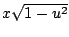 se pudo
haber perdido algunas soluciones, pero
Subsecciones
|